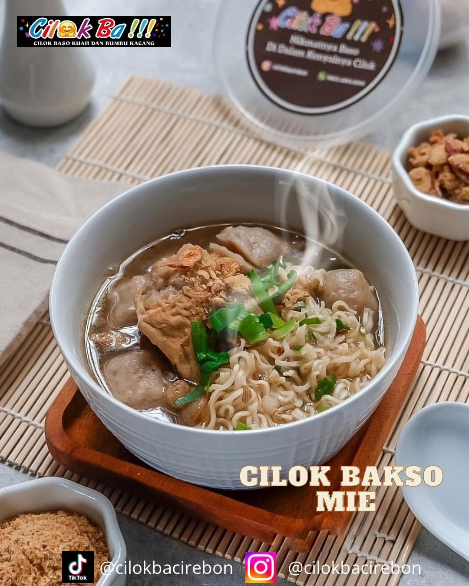
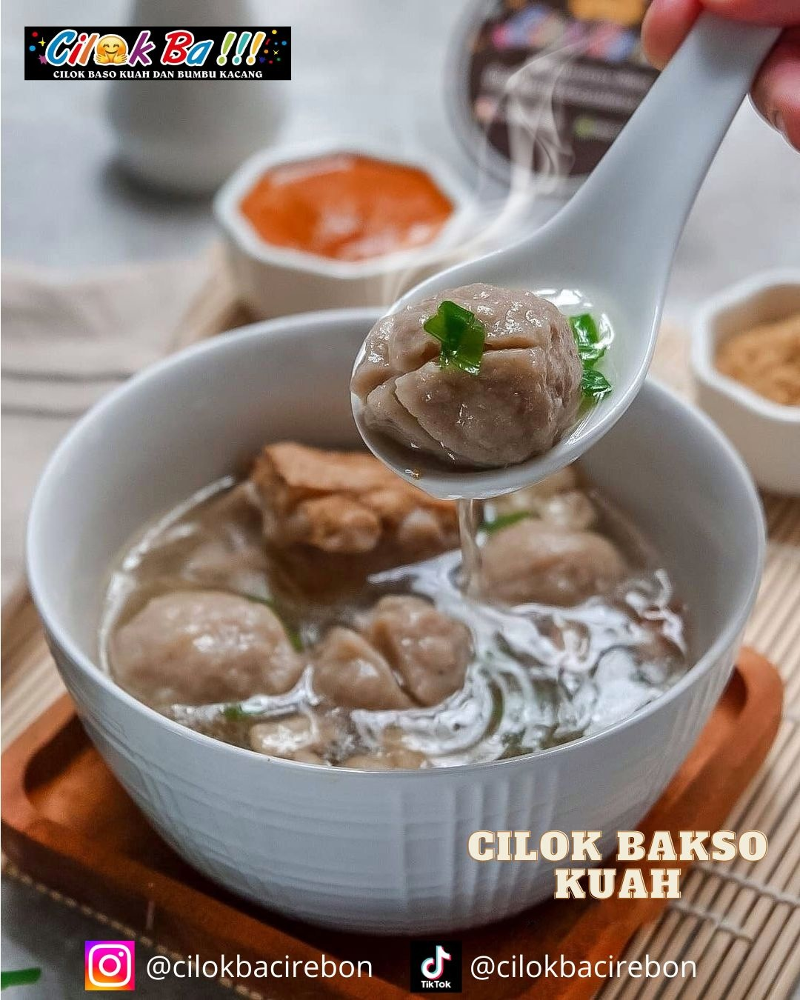
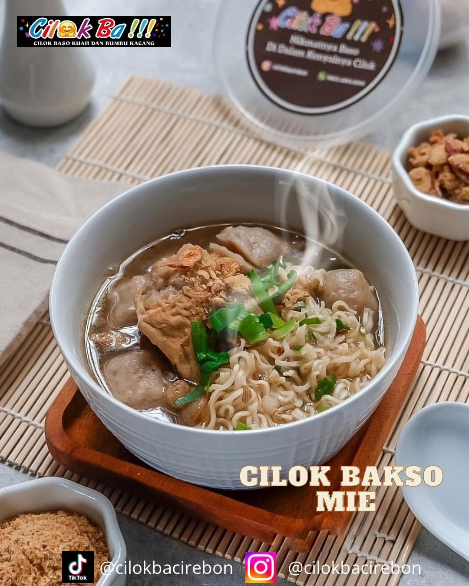
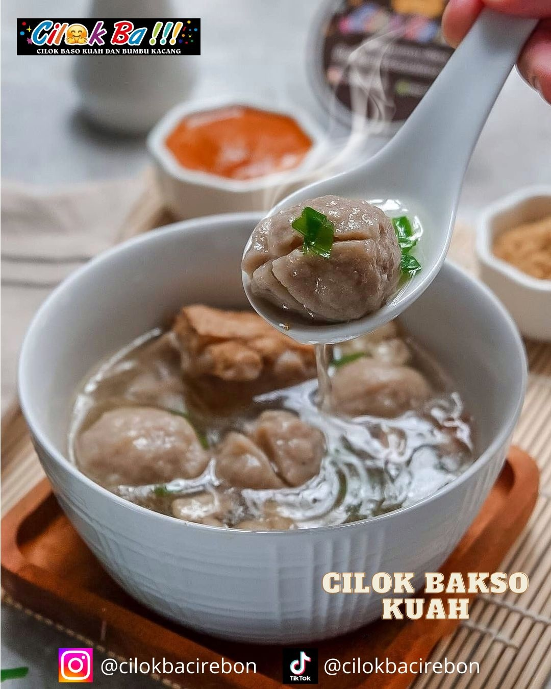

Deskripsi
Motivasi membangun cilokba adalah untuk memenuhi kebutuhan keluarga, Cilok Baa berdiri pada tahun 2020.
Alamat
Kompleks Jl. Yudhasari II No.9b, Kalikoa, Kec. Kedawung, Kabupaten, Jawa Barat 45131.
Kontak Person/WA
0823-1893-5000
Visi dan Misi
Visi Misi cilokba adalah menjadikan cilok makanan kekinian dan dapat dinikmati oleh semua kalangan.
Order Online
Maps
Google MapsMenu
 




Sosmed